Contributing to OEIS using tilezz
Table of Contents
Introduction
In the previous part of this series I presented to you the key concepts of the framework I developed and implemented in my tilezz project. You might still have doubts about the merit of the approach, given that it lives in an awkward space that could be characterized as too messy for theoreticians (combining number theory, geometry, and formal languages in unheard-of ways) and too theoretical for practically-minded tiling enthusiasts.
Certainly the whole project is a speculative research direction that could have easily been an elegant but fruitless dead end, but now I can proudly report on a few milestones I have reached recently using all this machinery:
- seven sequences contributed to the OEIS (two of them corrections), and
- establishing that Spectre is the smallest chiral aperiodic monotile on $\mathbb{Z}[\zeta_{12}]$.
Arriving there required solving two algorithmically non-trivial problems efficiently:
- enumeration of all simple cyclotomic polygons up to a given size, and
- tileability analysis, orchestrated into a high-performance filter pipeline.
This post explains in detail how the first problem was tackled. The second is only sketched, because it has more the character of plumbing together a lot of well-established techniques (each surely interesting in its own right, but none of them my innovation), whereas the enumeration side has the more interesting mathematical and conceptual ideas.
Disclaimer: This was a lot of work that would not have been possible without AI, so I also used it to help me summarize and explain it. Sections where AI played a major role in writing and I mostly did the editing are highlighted by a magenta line1. It does not mean that this is low-effort content. I still carefully read, edit and revise everything until I find it acceptable to publish, and everything else would be an insult to a human reader. It might often be not exactly my choice of words, but apart from that, it is still my story-telling, exposition and content curation - because that is what I contributed. What to make of it is of course your decision. My perspective is explained in a separate post, while this one focuses on the technical content.
Let’s Enumerate Rats!
The concrete problem is this. Fix a cyclotomic ring $\mathbb{Z}[\zeta]$, where $\zeta$ is a primitive $n$-th root of unity – from here on $\zeta$ always means that fixed generator for statements that hold in general, and a subscript ($\mathbb{Z}[\zeta_{12}]$) names a specific ring.
Now list every simple polygon whose edges all have unit length and whose vertices lie in that ring, up to a given perimeter. We will only count up to rotation and reflection, following the convention that many OEIS sequences call the free count. Recall from the previous part that such a polygon – a rat – is fully described by its cyclic sequence of turning angles (note that a rat in tilezz does distinguish reflected and rotated copies, unless explicitly canonicalized), so it is a word over an alphabet of $n$ discrete directions, and enumerating rats means walking a tree of words. A word still being extended – an open self-avoiding walk of unit steps on the ring – is a snake; the search grows snakes and harvests the ones that close.
That reframing is what makes the problem approachable at all, but it does not make it small. The tree branches $n-1$ ways at every level (11 for $\mathbb{Z}[\zeta_{12}]$), so perimeter 16 over $\mathbb{Z}[\zeta_{12}]$ – the deepest enumeration I have published – is nominally $11^{16} \approx 5 \cdot 10^{16}$ walks, of which about $1.5 \cdot 10^9$ are rats. Around seven orders of magnitude separate the tree from the answer, and the job is to spend as little as possible on the difference.
The Foundation: One concrete basis per field
Before any ambitious search can even start, the arithmetic in the inner loop has to be cheap, because every node of the search tree needs to compute distances or segment intersections, and the result is ultimately determined by the sign of an algebraic number. For example, in this post I explained how you can intersect segments using only ring operations.
The typical approach to compute in an arbitrary algebraic number field is using symbolic or arbitrary-precision arithmetic, which makes sense for things a mathematician does, but not for number crunching. So tilezz does the opposite: each of the supported rings gets a concrete integral basis fixed at compile time, and everything above it is plain machine-integer linear algebra.
In the current implementation (unlike my first naive rational-number based prototype that was 30x slower), a ring element is an integer vector against the power basis $\lbrace 1, \zeta, \ldots, \zeta^{\varphi(n)-1} \rbrace$, where $\varphi$ is Euler’s totient: $\varphi(n)$ counts the integers in $1, \ldots, n$ coprime to $n$, and is the degree of the cyclotomic polynomial $\Phi_n$. That is exact and unique because $\zeta$ is a root of $\Phi_n$, which has integer coefficients and is monic – its leading coefficient is $1$ – so $\zeta^{\varphi(n)}$ equals an integer combination of the lower powers, and every higher power folds back into the basis without ever introducing a denominator. And since $\Phi_n$ is $\zeta$’s minimal polynomial, no element has two such representations. For each ring element, the coefficients are stored as a fixed-size array of $\varphi(n)$ machine integers on the stack.
In tilezz, by design no correctness-bearing code relies on a float. Cyclotomic number arithmetic is exact integer arithmetic, and as long as all coefficients stay within bounds of the numeric types (you’d need really big or extremely intricate polygons to reach these bounds, and such cases are detected and protected against), there are no numerical issues to worry about, even though conceptually we work in the 2D plane.
All rings are generated from one generic macro plus a few per-ring constants, so they share a single code path, and an algorithm written generically over “some cyclotomic ring” compiles for every one of them.
Cutting the search tree
With cheap exact arithmetic in hand, the enumeration is a DFS that extends a turning-angle sequence in place and backtracks. The optimizations fall into five conceptually distinct groups.
1. Lexicographic symmetry reduction
A rat of perimeter $k$ occurs as $k$ distinct words (one per starting vertex), doubled again by traversal direction and by mirroring; only the lexicographically minimal representative should be enumerated. The useful part is that this can often be decided from a prefix, long before the walk closes. Take rotations: compare the $d$ angles chosen so far with their own rotation by $j > 0$. The two are both determined on the first $d - j$ positions, since beyond those the rotation would need angles the walk has not picked yet – but if the rotation is already strictly smaller within that overlap, no later turn can undo it, and the whole subtree is dead. The test runs before the geometry check, so a rejected direction costs a handful of integer comparisons. Mirrors give a second family of partial comparisons – the word read backwards from a chosen anchor, with the angles negated – worth much less than the rotations, but free to check at the same time.
Concretely, for the rotation family over $\mathbb{Z}[\zeta_{12}]$, where a turn of $-4$ is a third of a full turn to the right:
| step | walk so far | rotation | its letters | vs the walk | verdict |
|---|---|---|---|---|---|
| 1 | [-4] | – | nothing to compare yet | ||
| 2 | [-4,-4] | by 1 | [-4] | [-4] | equal – undecided, keep going |
| 3 | [-4,-4,-5] | by 1 | [-4,-5] | [-4,-4] | strictly smaller – prune |
At step 2 the overlap is a single position and it ties, which decides nothing: the walk stays alive. One angle later the same rotation reads $-5$ where the walk reads $-4$, and that is permanent – whatever angles follow, the word starting at the second vertex is already smaller than the word starting at the first, so no polygon this prefix could close into has its lex-minimum here. The entire subtree goes.
There is a subtle issue here that an attentive reader of the previous part might already anticipate: while the snake is open, its first angle is not a turn at all. It is measured against an unspecified starting direction and is overwritten with the real value only when the polygon closes. So every comparison above runs on a word whose first symbol is provisional. Why is it safe to prune on a slot that is going to change?
The answer is that soundness never depended on that slot being right. Among all the words describing a given rat – one per starting vertex, in either traversal direction – one is lexicographically smallest; call it $C$. The prune is precisely a prefix test for “could this still be $C$”, so $C$ passes it trivially: a strict loss inside a determined window would exhibit a rotation or mirror of $C$ that is lex-smaller than $C$ itself. And $C$ is a closed word, so read as a walk it already begins with its true first angle – the provisional slot never enters the argument. Every rat keeps at least this one walk, and it is the only one that matters.
But by the same logic we also preserve, as collateral, walks starting in some wrong direction – one that gets rewritten into the correct angle at closure, and that until then makes the sequence look lexicographically smaller than it will turn out to be. For example, the unit square from the previous part has $C = [-3,-3,-3,-3]$, its clockwise traversal; the counter-clockwise word $[3,3,3,3]$ dies at depth 0, where the mirror pruning rejects every positive first symbol. Meanwhile four further walks survive all the way to closure – $[-5,3,3,3]$, $[-4,3,3,3]$, $[-5,-3,-3,-3]$ and $[-4,-3,-3,-3]$ – each opening with a heading small enough to pass for the start of something better than $C$, and each having that heading overwritten the moment it closes. Five walks, one rat. The surviving words are canonicalized to their dihedral lex-minimum (Booth’s algorithm), and then deduplication takes care of it.
2. Reachability, at every place of the field
This is the prettiest group of prunes and the largest single win. Call the active end of the partial walk its head: the vertex the next step extends from, and the value $h$ the DFS updates step by step. A snake becomes a rat exactly when its head comes back to the origin, so the question at every node is whether this head still can come back within the steps that are left.
Each remaining step is a unit vector, i.e. a root of unity, so a walk whose head sits at $h$ with $r$ steps left can close only if $-h = \zeta^{k_1} + \cdots + \zeta^{k_s}$ for some $s \le r$: the remaining steps have to add up to exactly the displacement that carries the head home. Any necessary condition on that equation is a legal prune, and number theory supplies one per place of the field. A place is one self-consistent way of measuring how big a number is, and they come in two families.
The first family arises because $\zeta$ is pinned down only up to relabelling: it is a root of a polynomial with $\varphi(n)$ roots, all algebraically indistinguishable, and nothing in the arithmetic records which one we chose to call $\zeta$. The picture on screen is one of those choices – the one sending $\zeta$ to $e^{2\pi i/n}$ – and sending it to $\zeta^g$ instead is just as consistent, for any $g$ coprime to $n$. Write $\sigma_g$ for that relabelling: the map that rewrites an element in terms of the new choice, sending $\zeta^k$ to $\zeta^{gk}$ and leaving the integers alone, so that $\sigma_1$ is the identity and $\sigma_g(h)$ is where $h$ sits in version $g$. Each $\sigma_g$ comes with its own notion of distance. You can draw that version of a walk perfectly well; it just comes out geometrically jumbled. I will call the $g = 1$ version – the tile as it actually sits in the plane – the physical picture, and each of the others a shadow: the same word, the same closure, faithfully drawn, but in a geometry the tiling does not live in.
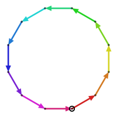
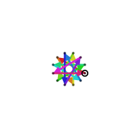
The reason is that the relabelling is a symmetry of the arithmetic, not of the plane: it preserves the word and it preserves closure, but not distance, not self-avoidance, not shape. Take the regular 12-gon – twelve unit steps, each turning $30^\circ$ to the left. Relabel the directions by $\sigma_5$, so that direction $k$ points where direction $5k \bmod 12$ used to, and every turn becomes $150^\circ$: the same twelve instructions still close, but they close as the $\lbrace 12/5 \rbrace$ star, folded from circumradius 1.93 down to 0.52. The edges are the same length in both pictures, and nothing else survives.
The second family measures divisibility instead, counting a number as small when it is divisible by a large power of a prime: the $p$-adic view, of which residues modulo $m$ are a coarse version. Sizes of the first kind are the archimedean places, of the second the finite ones – and the closure equation holds at all of them at once, which makes every place a separate sieve:
The physical place, the relabelling $g = 1$ we drew with: $|h| \le r$. The obvious distance-to-origin bound: of the 9.1 billion candidate directions the perimeter-12 walk considers, 61.3% are thrown out right here, before any intersection test is paid for.
The other archimedean places. The very same bound, checked in each of the other versions of the picture: $|\sigma_g(h)| \le r$. The $\varphi(n)$ versions collapse to $\varphi(n)/2$ places, because $\sigma_g$ and $\sigma_{n-g}$ are complex conjugates and so measure the same length: $\mathbb{Z}[\zeta_{12}]$ has exactly one place besides the physical one – the 12-gon figure draws both – while $\mathbb{Z}[\zeta_{32}]$ has seven. It needs no precomputation at all.
Why should one inequality hold in every version at once? Because each remaining step is a root of unity, and relabelling turns a root of unity into another root of unity: $|\sigma_g(\zeta^k)| = 1$, a unit step stays a unit step. So $r$ remaining steps can carry the head a distance of at most $r$ in every version of the picture simultaneously, and a head already too far from the origin in any single one of them can no longer get home in any of them.
And why is that not merely the physical check repeated? Because $\mathbb{Z}[\zeta]$ is dense in the plane: there are lattice points arbitrarily close to the origin, so “the head is nearly home” carries almost no effective information.
We can multiply the head’s length across all $\varphi(n)$ versions of the picture; that product is the field norm $N(h)$, and for a ring element it is always a whole number – the versions of $h$ are precisely the roots of $h$’s characteristic polynomial, which is monic of degree $\varphi(n)$ with integer coefficients, so their product is its constant term, up to sign. A whole number that is not zero is at least one, so for every $h \ne 0$ we have
$$|N(h)| = \prod_g |\sigma_g(h)| \ge 1$$
Now read that backwards: the product cannot fall below $1$, so a factor that gets small forces the others to make up for it. On $\mathbb{Z}[\zeta_{12}]$ the four factors are the relabellings $g \in \lbrace 1, 5, 7, 11 \rbrace$, and they pair off under complex conjugation – $\sigma_{11}$ is the conjugate of $\sigma_1$, $\sigma_7$ of $\sigma_5$ – so each pair contributes the same length twice and only two distinct lengths are left:
$$|h| \cdot |\sigma_5(h)| \ge 1 \quad\Longrightarrow\quad |\sigma_5(h)| \ge \frac{1}{|h|}$$
The shadow is at least the reciprocal of the physical distance. A head a quarter of a unit from the origin has a shadow at least four units out – the four-step walk in directions (0,5,5,10), for instance, leaves its head $\approx 0.268$ from the origin while the shadow lands $\approx 3.732$ away, the two multiplying to exactly 1.
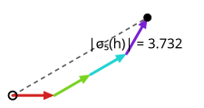
Combine that with the shadow’s own closure bound $|\sigma_5(h)| \le r$ and something pleasant drops out: a non-zero head that can still close must satisfy $|h| \ge 1/r$. The lattice is dense, but the live heads are not: with $r$ steps left they keep their distance from the origin.
The finite places. The same equation read modulo $m$, on the principle that if the remaining steps cannot cancel the head even when everything is tracked only modulo $m$, they certainly cannot cancel it exactly. So precompute, once per modulus, the sets
$$R_{\le r} = \lbrace \zeta^{k_1} + \cdots + \zeta^{k_s} \bmod m \mid s \le r \rbrace$$
for every budget $r$, by breadth-first search over the $m^{\varphi(n)}$ residues. A node with head $h$ and budget $r$ then dies unless $-h \bmod m \in R_{\le r}$. The $\le$ in the subscript is load-bearing: with $R_{=r}$ the prune would reject legal walks, since a walk may close before spending its whole budget. One hash lookup per modulus in the hot loop, and the tuning knob turned out to be the number of moduli (about four), not which ones.
3. Beyond places: a catalogue of closable suffixes
The checks above all work with a projection of the head; this one keeps it exactly. Enumerate every simple path of at most $L$ steps out of the origin and record where it ends and which way it faces – run backwards, that is a catalogue of every way to reach the origin in $\le L$ steps. So with $r \le L$ steps left, rotate the suffix the walk needs into the origin frame, look it up, and a miss kills the branch. It is stronger than any projection above, seeing exact position and facing rather than a quotient of them – but a hit is still only a necessary condition, never a promise: the catalogue was built in an empty plane, so it certifies that some self-avoiding suffix reaches the origin from here, not that such a suffix avoids the edges this walk has already laid down. Exponential in $L$, so $L = 4$ and only the last few levels.
4. Geometry as a finite automaton
Everything above answers can this prefix still close? What remains per surviving node is the separate question of whether the new edge crosses what is already drawn – the bucketed neighbourhood check from the previous part.
The deeper idea removes the arithmetic from the loop entirely. Lay a grid of identical parallelogram cells over the plane, each spanned by $1$ and the unit direction nearest a quarter turn – a unit square when $i$ lies in the ring, a rhombus otherwise. That choice is what keeps a unit step from ever skipping a cell. Every vertex then splits into two parts: which cell it sits in, and where inside that cell it sits. Call the second part the state. Shifting everything by a whole number of cells changes neither the state nor what a unit step does to it, so a step depends on the state and the direction alone: $(\text{state}, \text{direction}) \mapsto (\text{next state}, \text{cell hop})$, the hop naming which of the nine cells – its own or a neighbour – the step lands in.
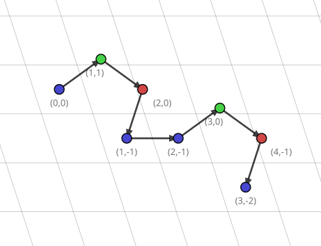
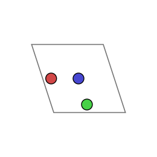
States and steps thus form a graph, and walking the lattice is walking that graph. It is infinite in general – the ring is dense, so the residuals keep subdividing the cell – but a rat of perimeter $k$ never strays more than $k/2$ steps from the origin, so we carve out the finite subgraph within that radius and tabulate it once. For $\mathbb{Z}[\zeta_{12}]$ at perimeter 16 that is 145 states; over the Eisenstein integers it is exactly one, because there the two cell vectors already generate the whole ring and every vertex folds to the cell origin.
The self-avoidance test changes shape too: instead of running the exact intersection test on two segments, we look up a bit. A unit edge can cross at most one grid line in each of the grid’s two directions, so it lies in at most three cells, and the piece of it inside one cell is called a fragment. Which fragments an edge contributes is read off $(\text{state}, \text{direction})$, and each cell keeps the list of fragments already lying in it. Since two edges can only cross inside a cell they both pass through, the new edge is compared only against the lists of the cells it touches. So the exact test still decides every crossing – it just was precomputed, once per pair of fragment shapes, instead of per pair of segments at every node.
That bookkeeping cannot go away: whether an edge crosses the drawing depends on the whole history of the walk, which no finite state can hold. But the cell coordinate the walk is already carrying is the index, so finding the right list costs nothing.
5. Parallelization
The subtrees below a fixed depth are independent, so walking down to a split depth produces work units that parallelize with no communication at all. A seed is just an angle prefix, so the same list drives threads on one machine or processes on several, and a run can be split or resumed by passing prefixes around.
The speedup stays well short of the core count, though. On 16 cores the same run is 2.9x faster at perimeter 11, 4.7x at perimeter 12 and 6.7x at perimeter 13. The main issue is that the seed subtrees have very unequal size (i.e., valid rats are unevenly distributed over possible prefixes), which leaves some workers idle while others are still busy.
What it adds up to
One machine, one build, one target: $\mathbb{Z}[\zeta_{12}]$ at perimeter 12, free, single-threaded, best of three runs (spread under 8%). Each optimization is switched on alone against the same baseline, and every configuration returns the same 703407 rats. Note the baseline is already not a naive enumerator: the lex-min rotation prune and the physical-place (plain distance to the origin) bound - the conceptually simple common-sense optimizations - are always on.
| optimization | tree searched | wall clock |
|---|---|---|
| reachability prune (the shadow and finite places) | 10.6x smaller | 12.8x |
| closable-suffix catalogue | 5.2x smaller | 5.2x |
| automaton geometry | unchanged | 1.9x |
| all three together | 20.4x smaller | 38.5x |
| the same, on 16 cores instead of 1 | unchanged | 4.7x further |
The factors do not multiply: individually they come to $12.8 \times 5.2 \times 1.9 \approx 127$x, together they deliver 38.5x, because they compete for the same branches – whichever prune runs first takes the credit for a subtree the others would have killed too. The automaton is a different kind of optimization altogether: it leaves the tree identical, down to the last of the 9.1 billion direction attempts, and only makes each node cheaper, which is why its 1.9x shrinks to 1.34x once the prunes have already removed most of the geometry it was there to accelerate. End to end, the unoptimized single-threaded baseline needs 26 minutes on my laptop whereas the fully optimized 16-core run needs 8.6 seconds: $38.5 \times 4.7$, a factor of 182.
Those factors are also far smaller than the seven orders of magnitude this post opened with, so it is worth seeing where the rest goes. At perimeter 12 the nominal tree holds 3.1 trillion words, but the baseline DFS only ever tries 9.1 billion directions: growing the walk one step at a time and rejecting on geometry and symmetry kills most branches before they exist. The three optimizations bring that down to 444 million – still 632 candidate directions examined per rat found, most of them rejected before a step is taken at all. The gap gets narrowed, not closed.
Every optimization measured above is opt-in and off by default, which is what makes the whole stack auditable. The test suite runs all eight on/off combinations of the three prunes – shadow places, finite places, closable-suffix catalogue – at several thread counts, and demands the identical canonical set as the unoptimized baseline, with published OEIS counts as an external anchor on top.
Before any of this, perimeter 8 took two and a half hours and 10 was out of reach. Now perimeter 12 lands in 8.6 seconds, and the published dataset reaches perimeter 16 - $1{,}696{,}726{,}440$ rats of perimeter $\le 16$ altogether - in less than a day of compute on my laptop.
From the search to a dataset
A rat is stored as what it is: its turning word, one signed byte per turn. The individual object is tiny – a perimeter-16 rat is sixteen bytes – but at the frontier there are 1.7 billion of them, and that is the point where the result, not the search, becomes the limiting factor. An in-memory hash set of short byte strings costs 50-100x its raw payload once per-entry overhead, resize doubling and per-worker duplication are counted: long before the DFS runs out of time, the machine runs out of RAM.
So the pipeline never holds the answer in memory. It runs as three stages over one output directory, ultimately producing a DAFSA:
- Enumerate. Each worker takes its share of seeds and writes closures into a bounded sort buffer (~16 MB), flushing a sorted run to disk whenever it fills. Peak memory is workers times buffer, independent of how many rats there turn out to be.
- Merge. A k-way merge folds those runs into a single sorted, deduplicated file, next to a certificate recording its BLAKE3 hash, the headline counts and the exact flags that produced them.
- Build. That file is streamed into the automaton builder without ever materialising the set.
One small encoding decision makes the stages fit together with no re-sorting anywhere. Each record carries its length in the first byte, and every angle is stored shifted by +128, so -5 becomes 123 and +5 becomes 133, and a negative turn no longer sorts above a positive one the way its raw signed byte would. With that, plain byte order already coincides with the (length, then lexicographic) order the final automaton wants, which is what lets the stages hand off directly: the merge can order records by comparing raw bytes instead of decoding each one, and the builder – which can only close off a state once it knows no later word shares that prefix, so it needs its input sorted – consumes the merged file as it streams.
Here, the DAFSA is used as a practical string compression mechanism. It is the minimal deterministic automaton accepting exactly the enumerated words, so every shared prefix and every shared suffix is stored once; hanging a subtree count on each state turns it into an index as well, mapping each word to its rank and back, which is what makes the shipped set queryable rather than merely stored (otherwise one could have just use a off-the-shelf compression algorithm). For $\mathbb{Z}[\zeta_{12}]$ up to perimeter 16 those 1.7 billion words – 26.9 GB of raw angle bytes – are represented by 7.4 million states and 39.0 million edges, and shipped as 131 MB in 103 content-addressed blocks. Under a bit per polygon.
What went to OEIS
One free enumeration per ring is really seven counting sequences at once: the base count of all rats, plus six filters over the very same set – one-sided, achiral, rotation-symmetric, symmetric, the even-turn sub-ring and the odd-turn coset. Each filter is a sequence in its own right, every dataset ships all seven, and the deeper the run, the more terms each of them gains.
That is far more than I submitted. I only corrected a published value or pushed a sequence further. The rest I left alone – anyone can derive them from the published datasets in a few lines, so filing them would add bookkeeping rather than knowledge.
- A316200, free rats on $\mathbb{Z}[\zeta_{10}]$ – corrected a(11) from $19405$ to $9883$, and extended a(12) to a(18).
- A284869, free rats on $\mathbb{Z}[\zeta_6]$ – corrected a(22) from $374128188$ to $374128154$, and added a(23) and a(24).
- A316192, free rats on $\mathbb{Z}[\zeta_{12}]$ – extended a(11) to a(16).
- A316198, free rats on $\mathbb{Z}[\zeta_8]$ – extended a(7) to a(10).
- A316196, symmetric rats on $\mathbb{Z}[\zeta_6]$ – extended a(16) to a(24).
- A316194, symmetric rats on $\mathbb{Z}[\zeta_4]$ – extended a(9) to a(16).
- A316195, the odd-turn coset on $\mathbb{Z}[\zeta_{10}]$ – extended a(8) and a(9).
(OEIS indexes some of these by perimeter $n$ and others by $2n$; the terms above follow each sequence’s own convention.)
I wanted to be very confident before I would publicly state that I spotted wrong values in OEIS, so I was careful: A316200’s a(11) was re-derived by a fully independent implementation that is also using exact $\mathbb{Z}[\sqrt 5]$ arithmetic, and for A284869’s a(22) I contacted the author, who then spotted a bug in his code and asked me to submit my value as a correction. Every other published term I could reach was reproduced exactly before anything new was added on top.
None of this ships as a table of numbers. I tried to implement the FAIR data principles to the best of my abilities: the Rat Explorer is hosted as a static website on GitHub Pages and the blocks are fetched on demand from a separate dataset repository, so you can explore the whole set in a browser without ever downloading it in full. Every per-ring dataset is packaged as an RO-Crate that pins the producing commit, the exact command line and a SHA256 per block, and ships a standalone verifier that re-derives the OEIS counts from the blocks – see for instance the $\mathbb{Z}[\zeta_{12}]$ set to perimeter 16. That does not prove I did not miss a rat, but you can actually look at every single one I found.
I hope that this level of care for empirically or computationally obtained datasets backing scientific results becomes more common sense and common practice in the future. Taking data management seriously is a key remedy against the replicability crisis haunting many areas of science.
Bonus: Spectre is the smallest aperiodic monotile on $\mathbb{Z}[\zeta_{12}]$
One motivation for building tilezz was to find more, possibly even simpler aperiodic siblings of the Spectre tile. Even though there is no easy method to find aperiodic monotiles, there is extensive theory about determining whether a tile tiles the plane periodically. So I built a pipeline to sieve through rats living on $\mathbb{Z}[\zeta_{12}]$. It alternates between trying to disprove tileability and proving periodic tileability. Whatever survives this is worth looking at more closely.
To disprove tileability, I essentially try to compute the Heesch number of the tile using a more or less brute force approach, with a pruning heuristic based on pre-computed uncloseable boundary features. The Heesch number says how many fully closed rings of tiles (called coronas) you can place around a single tile before you cannot proceed. A majority of tiles have Heesch number 0 or 1, i.e. you quickly get stuck and the exhaustive check terminates, certifying non-tileability. Sadly, there is no compact witness that the Heesch number I computed is an upper bound (it is a co-NP problem), but at least the lower bound is certified by a $k$-corona patch.
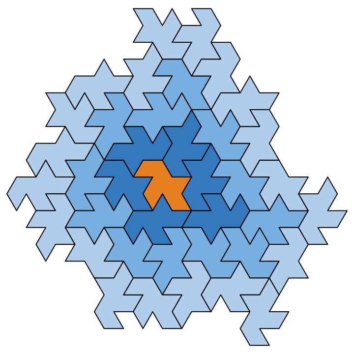
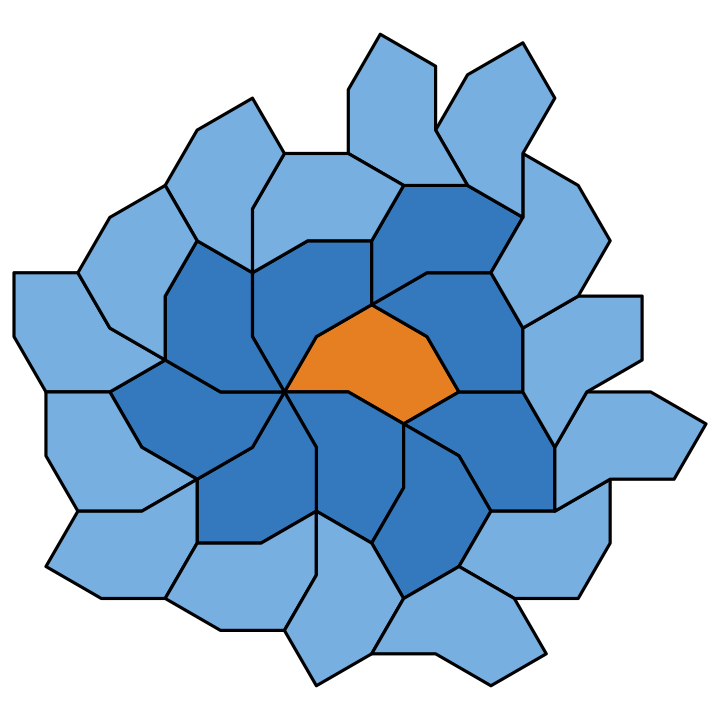
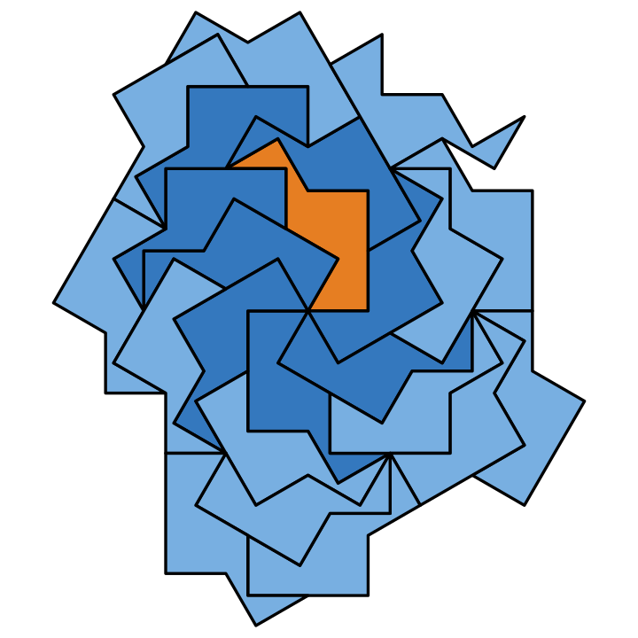
For the other side of the attack, I throw various algorithms at the tile trying to certify a periodic tiling that falls into a known recognizable family:
- the Conway criterion, on the boundary edge sequence,
- a search for isohedral edge-gluings, covering the 3-, 4- and 6-fold rotation centres the Conway criterion misses,
- anisohedral clusters, where $k$ copies of the tile can tile as a composite,
- a torus cover: fold the plane onto a torus and check that $k$ copies cover it exactly, which unfolds into a periodic tiling of the whole plane,
- a translation-only criterion for the brick-wall class the Conway criterion misses (Beauquier and Nivat).
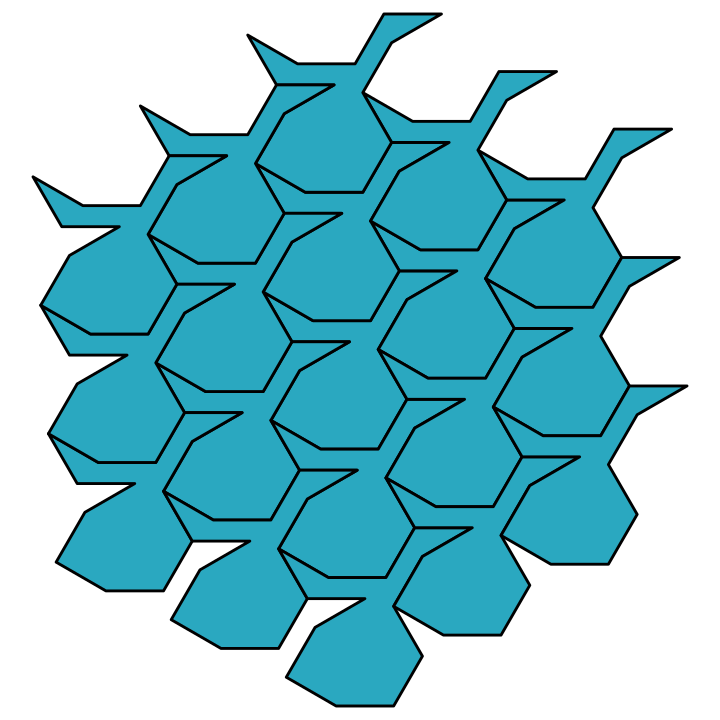
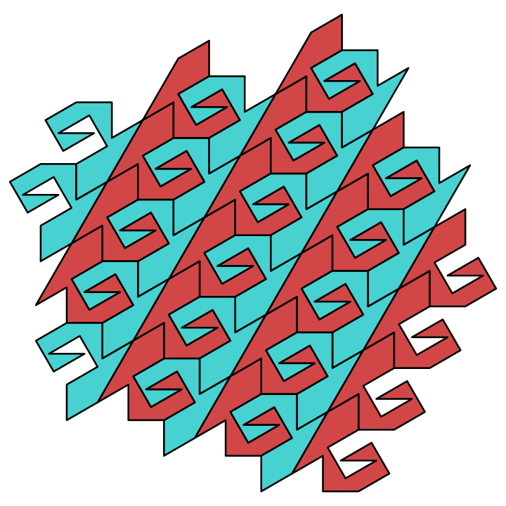
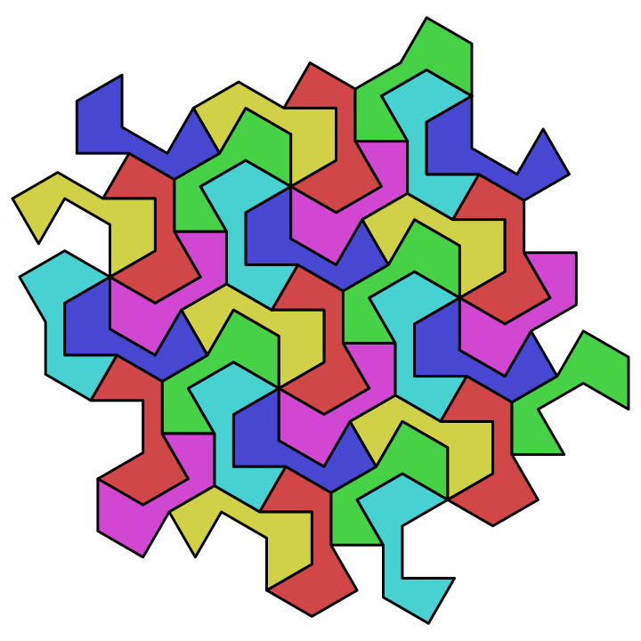
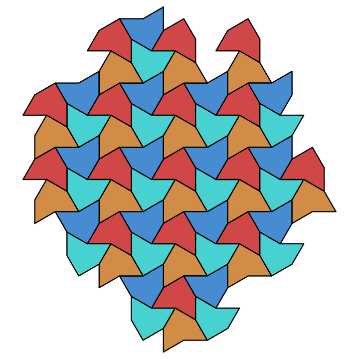
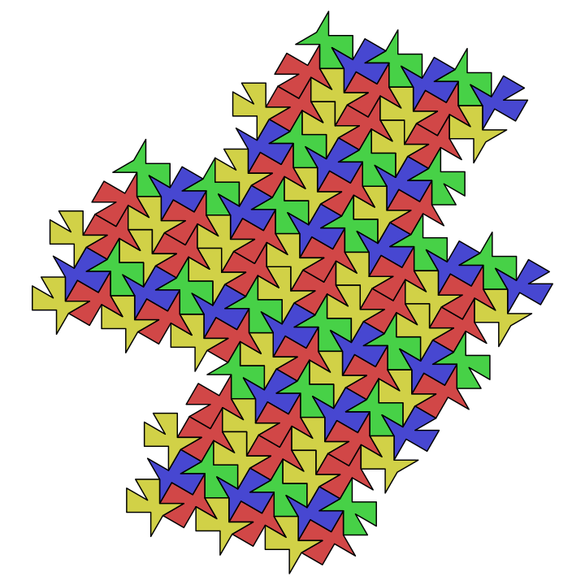
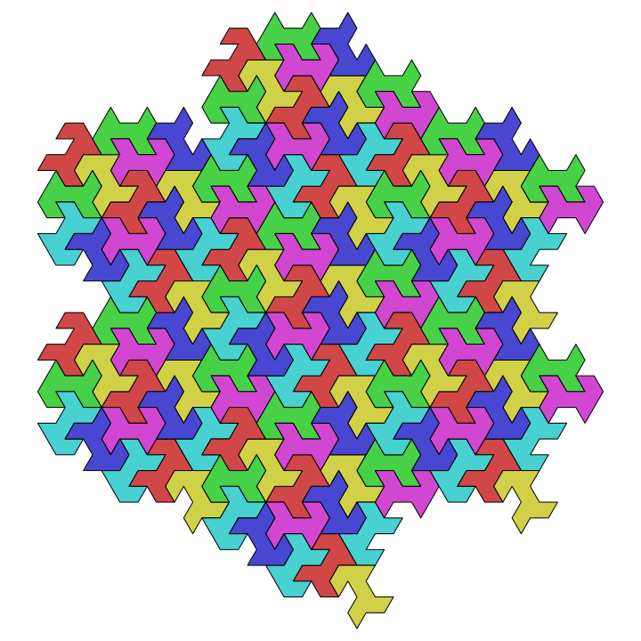
Each one yields a certifying recipe that lets you build an arbitrarily large patch. The criteria overlap heavily – most tiles are certified by several of them – so which one a tile ends up labelled with depends on the order they are tried in.
Probably I could write another whole post about this other hunt, but the (for me) mildly disappointing result is: Spectre is the unique smallest chiral aperiodic monotile on the smallest cyclotomic ring that can represent it, $\mathbb{Z}[\zeta_{12}]$. I know because the sieve ran over all $33{,}279{,}563$ rats of perimeter at most 14 – the Spectre’s own perimeter – and every one of them except Spectre came out cleanly classified as either provably periodic or provably non-tiling. At least I wanted to have this stated. Maybe this is not of academic interest, but it still is a neat outcome. And at least I saw some very pretty images on the way there.
I think this can be considered evidence that at least small aperiodic tiles are indeed rare, and if they exist, they probably need more expressive edge proportions than unit steps. However, any generalization in that direction would make the search space even larger. All in all this makes the Spectre even more special and a very lucky find.
Summary
My vision for tilezz has always been to build a Swiss Army knife for attacking various tiling questions computationally, in order to turn the arcane art of discovering interesting tiles into more of an engineering problem.
While I have not reached the ambitious level I dream about, e.g. automatically
- identifying candidates for aperiodic monotiles, or
- revealing emergent macrotile structures,
or similar frontier-adjacent goals, I believe that tilezz is already a pretty powerful framework to analyze tiles, tilesets and patches they can induce, and that it is far from having realized its full potential.
The library already contains various plotting utilities, but there is no product-grade application. The Rat Explorer only uses and demonstrates a tiny fraction of what the library can do.
I must say that now I am a bit exhausted from this tiling saga. Even with help of AI, I have been working on this for multiple months on the side, whenever I had some spare time. But it is quite likely that I will eventually pick it up again, if not this year then another.
There are many exciting follow-up ideas and projects I would like to explore. One of them would be a web-based graphical user interface, a kind of “tiling laboratory”, to make more tilezz functionality accessible for playful exploration or assistance in tiling research.
-
And of course, all illustrations are AI-generated and rendered using the also AI-generated new renderer-agnostic visualization backend. Do you think I have time or motivation to write plotting code? I am not claiming to be a visual artist, so I won’t even bother AI-marking it. The old and horrible plotters code I wrote by hand 2 years ago is gone, and rightly so - plotters turned out to be very buggy and also probably was not the right tool for my needs in the first place. ↩